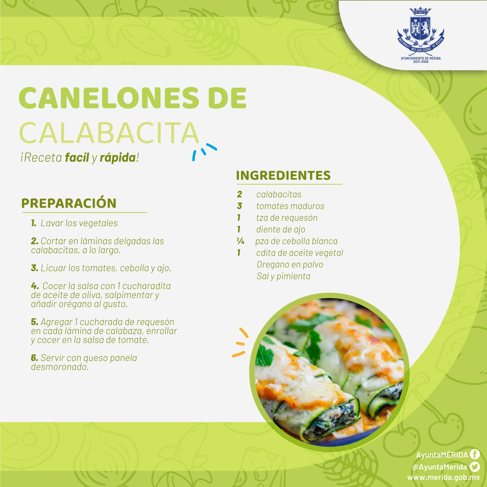

NutriPlus es un proyecto innovador que surge del actual programa Recrea STEAM 2025. Nuestra misión es brindar información accesible y útil sobre alimentación saludable, promoviendo una vida más saludable para todos. A través de recetas fáciles, desafíos interactivos y menús equilibrados, buscamos fomentar buenos hábitos alimenticios en la comunidad.
La alimentación poco equilibrada es una de las principales causas de enfermedades prevenibles en la sociedad moderna. Muchas personas, especialmente los jóvenes, carecen de información adecuada sobre cómo mantener una dieta saludable. En las escuelas, la oferta de alimentos no siempre favorece el consumo de productos nutritivos, lo que impacta negativamente en el bienestar de los estudiantes.
NutriPlus propone una solución tecnológica innovadora al integrar una aplicación móvil que ofrece:
NutriPlus busca transformar los hábitos alimenticios de las personas, empoderando a los usuarios con información clara y práctica sobre cómo hacer elecciones más saludables. Nuestro objetivo es crear una comunidad más consciente de su salud, que adopte prácticas alimenticias sostenibles y beneficiosas a largo plazo.
